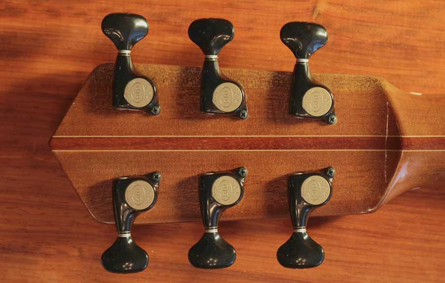

This is a little parlor guitar that I made last year. It has beautiful Claro Walnut back and sides. I left some sapwood in the middle for dramatic effect. The sapwood on the sides seems to have a subtle golden orange glow which just makes you feel warm inside.
The sapwood turned out to be very dramatic. It has these grey blue blotches which is actually fungi that occasionally occurs in sapwood. It gives the guitar a nice earthy look.
The top is Port Orford Cedar which only grows in a small area in the pacific north west. The colour matches the walnut perfectly. Port Orford Cedar has a sweet piney smell that I just love. Stick your nose in the sound hole; the smell of the walnut and POC will make you want to crawl inside and live in there.
The combination of tone woods on this guitar produces a warm woody sound which lends itself to finger style playing. I keep this little guitar kicking around in the living room (parlor). It gets picked up and played several times a day.